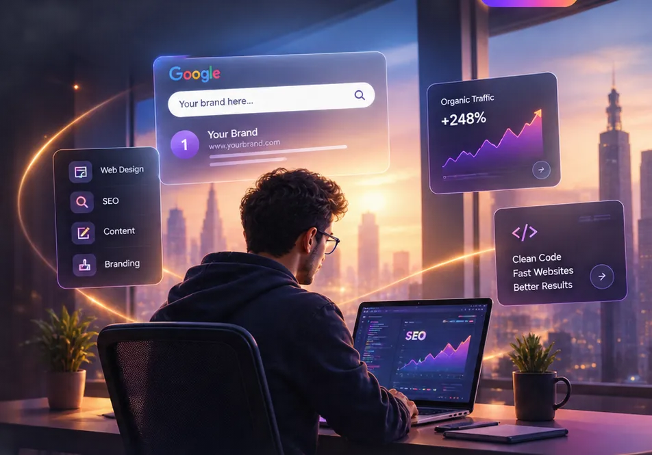

Strategy before decoration
Every page starts with a purpose, a visitor question and a clear next step.
SEO Flares is a creative digital agency helping businesses get found,
get clicks and grow online with powerful websites, SEO and content

Strategy, design, development and search working together—so your website feels consistent from the first impression to the final click.
We specialise in focused 1–2 page websites for fast-moving projects. When the scope and content are ready, the first version can be delivered in under 6 hours—then we can refine the homepage with motion, interactions and stronger visual storytelling.
A beautiful interface is only one part of a successful digital presence. The best websites make your value obvious, answer important questions, remove friction, load quickly, work on every screen and give search engines enough structure to understand what you offer.
That is why we don't separate design from development or SEO from the website itself. We bring these disciplines together from the beginning, creating a stronger foundation for visibility, credibility and growth.
Every page starts with a purpose, a visitor question and a clear next step.
A distinctive visual system makes the business easier to remember.
Structure, content and technical details are considered while the site is built.
A good website should have room for new pages, campaigns and improvements.
Choose one service or build a complete digital system. We can start with the highest-priority problem and expand from there.
We design distinctive, modern websites around your positioning, audience and business goals.
Typography, hierarchy, spacing and visual rhythm work together to create a recognisable digital presence.
Every section has a role, guiding visitors naturally from the first impression to the information they need.
Layouts are carefully adapted for desktops, tablets and mobile devices for a polished experience everywhere.
Performance, accessibility and usability are considered alongside visual design, creating websites that look refined and work effortlessly.
Clean, maintainable and responsive front-end experiences built with semantic HTML, modern CSS and JavaScript where it adds value.
Technical SEO, on-page optimization, content structure, keyword intent and local search foundations designed as part of the website—not an afterthought.
Explore SEO →Fast-loading pages, stable layouts, optimized media, readable content and responsive interactions that respect real-world users.
Websites and search foundations designed for businesses that depend on customers discovering them in specific locations.
Launch is not the end. We can continue refining pages, content, performance, SEO and conversion opportunities as your business evolves.
Clear messaging, page structure and content direction that help visitors understand what you do, why it matters and what they should do next.
We refine calls to action, page hierarchy, trust signals and user journeys so more of the right visitors can move confidently toward contact or enquiry.
Plan Your Growth →Your website should communicate your value before someone has read every paragraph.
We use visual hierarchy, contrast, typography, spacing, imagery and interaction to make the important information easy to find. Instead of decorating a template, we build a visual system around the personality and positioning of the business.
SEO works best when it is treated as a system, not a last-minute checklist.
We look at the technical foundation, page structure, search intent, content opportunities, internal linking and local relevance. The objective is not simply to chase traffic—it is to create useful pages that can attract people who are actually looking for what you offer.
Illustrative capability graphic — not a client performance claim.Different industries need different messages, proof points and customer journeys. The underlying principles stay strong while the experience changes around the business.
Consultants, advisors, agencies and specialist firms.
Businesses where location, trust and enquiries matter.
Complex products translated into clear digital stories.
Discovery, product presentation and customer journeys.
Experiences that communicate atmosphere before arrival.
Information-rich websites made easier to navigate.
Visual-first websites with room for personality.
Focused digital foundations built to evolve with the business.
Good projects don't need unnecessary complexity. They need a clear sequence, thoughtful decisions and enough room for refinement.
We learn about your business, audience, competitors, goals and current digital challenges.
We identify opportunities in content, user journeys, search intent and positioning.
We create the sitemap, information architecture and page-level priorities.
We develop the visual system, layouts, components and responsive experience.
We turn the approved experience into clean, responsive and maintainable front-end code.
We review technical SEO, performance, accessibility, metadata and content structure.
We check layouts, interactions, links, forms and key experiences across screen sizes.
We prepare the final handover and the foundations for ongoing improvement.
Depending on the project, your scope can include the following foundations.
Page planning, hierarchy, navigation and conversion priorities.
Typography, colour, components, imagery and brand expression.
Desktop, tablet and mobile layouts with careful breakpoint behavior.
Semantic structure, metadata, headings, internal linking and crawl-friendly architecture.
Optimized assets and front-end decisions designed around a fast experience.
Quality checks, links, forms, responsive review and final polish.
A narrative-driven website built around faith, memory, stories and an ongoing journey.
Visit live website ↗A multilingual spiritual platform combining temple information, scripture, stories and media.
Visit live website ↗The agency website you're building now — designed around web design, development and search growth.
Open website ↗A dedicated cultural exploration connecting stories, traditions and devotional themes.
Explore experience ↗These are internal illustrative targets and principles, not promises of specific client outcomes.
Visual richness and technical discipline can coexist.
We pay attention to the things users feel even when they cannot name them: how quickly the first content appears, whether the page jumps while loading, how comfortable it is to tap on a phone, whether text remains readable and whether interactions feel deliberate rather than heavy.
It is a process that leaves you with a clearer digital direction and a website you are proud to send people to.
“The new website finally feels like our business. The message is clearer, the design is more confident and the mobile experience is dramatically better.”Sample client · Professional services
“What stood out was the thinking behind the pages. We weren't just given a visual design—we understood why the structure worked.”Sample client · Technology
“We wanted something colourful and memorable without losing professionalism. The final direction gave us exactly that balance.”Sample client · Local business
Some of the questions businesses commonly ask before beginning a website or SEO project.
It depends on the number of pages, complexity, content requirements, integrations and the level of design and development involved. We prefer defining the scope first rather than forcing every business into the same package.
A focused website can often be completed in several weeks, while larger content-rich websites may take longer. The timeline depends on scope, content readiness, feedback and functionality.
Yes. A redesign can preserve useful content and search equity while improving structure, visual design, mobile experience, performance and conversion paths.
We can use proven patterns where appropriate, but the design system and page experience should be tailored to the business. Custom HTML, CSS and JavaScript can be used when a more controlled experience is required.
SEO foundations can be incorporated into the build from the start. Ongoing SEO is a separate, continuous discipline involving content, technical improvements, search intent and measurement.
Yes. Local SEO can include location-focused website content, local landing pages, business information, technical foundations and broader local search strategy.
Yes. We can review media, front-end assets, layout stability, rendering, scripts and other technical factors that influence perceived and measured performance.
You can maintain the website yourself or continue with us for updates, new pages, content improvements, SEO, performance work and ongoing digital development.
Yes. We can help structure the content requirements and create a clear content plan. Full copywriting can also be included in the project scope when needed.
Yes. The process can be handled remotely, with meetings, reviews and approvals organized around the project.
Whether you need a complete website, a redesign, better search visibility or a stronger digital foundation, let's start with a conversation about what you actually need.